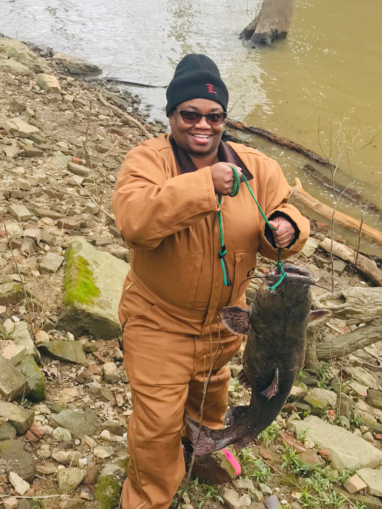
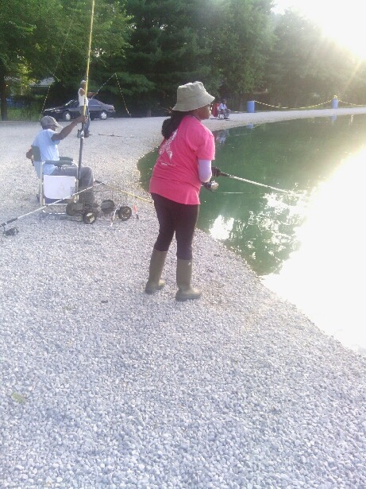

River Fishing
The Ohio River has some of the biggest flathead catfish in the world a good angler can reel in on a boat or on land. You just need a Kentucky or Indiana State license.
Pay Lakes
There are several locall pay lakes in Louisville. Endless fishing for normally $20.
- Diddles Pay Lake
- Harry's Pay Lake
- Haven's Pay Lake
Miltary Post Lakes

Even though fishing on a Military post requires a state fishing license and a miltary fishing license. There are many lakes to fish from; with a wide range different type of fish.
- Lower Dogulas Lake
- Sanders Lake
- Upper Hunters Lake